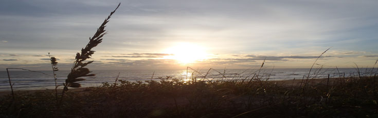
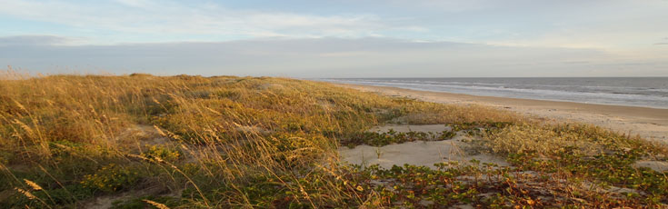

LIST OF PUBLICATIONS
(Undergraduate student authors are underlined)
Articles in Prep:For more information on articles in the final stages of prep, please contact me directly. |
|
Articles in Review |
|
| (17) | Weymer, B., P. Wernette, M. Everett, P. Pondthai, M. Jegen, and A. Micallef. (In Review) Multi-layered high permeability conduits connecting onshore and offshore coastal aquifers. Submitted to Frontiers in Marine Science. |
Published Articles |
|
| (16) | Wernette, P., C. Houser, A. Evans, and J. Lehner. (In Press) Barrier island resiliency and human impacts: Lessons from Hurricane Harvey. *Invited Research Article by the editors of Geomorphology. |
| (15) | Wernette, P., J. Lehner, and C. Houser. (In Press) What change is ‘real’? A probabilistic approach to accounting for uncertainty in environmental change analysis. Accepted to Geomorphology. |
| (14) | Houser, C., J. Lehner, and P. Wernette. (2019) Machine learning analysis of lifeguard flag decisions and recorded rescues. Natural Hazards and Earth System Sciences, 19:2541-2549. |
| (13) | Houser, C., B. Vlodarchyk, and P. Wernette. (2019) Short Communication: Public Interest in rip currents relative to other natural hazards: Evidence from Google Search data. Natural Hazards, 97:1395-1405. |
| (12) | Wernette, P., C. Houser, B. Weymer, M.P. Bishop, M. Everett, and B. Reece. (2018) Long-range dependence in framework geology: Asymmetries and implications for barrier island resiliency. Earth Surface Dynamics, 6:1139-1153. |
| (11) | Weymer, B., M. Everett, P. Wernette, and C. Houser. (2018) Statistical modeling of the long-range-dependent structure of barrier island framework geology and surface geomorphology. Earth Surface Dynamics, 6:431-450. |
| (10) | Wernette, P. (2018) PhDs and undergraduate research projects. Inside Higher Education, Published 5 June 2018. |
| (9) | Wernette, P., C. Houser, B. Weymer, M.P. Bishop, M. Everett, and B. Reece. (2018) Influence of a spatially complex framework geology on island geomorphology. Marine Geology, 398:151-162. |
| (8) | Wernette, P., S. Thompson, R. Eyler, H. Taylor, C. Taube, C. Decuir, A. Medlin, and C. Houser. (2018) Defining dunes: Evaluating how dune feature definitions impact dune interpretations from remote sensing. Journal of Coastal Research, pre-print. |
| (7) | Houser, C., P. Wernette, and B. Weymer. (2018) Scale dependent behavior of the foredune: Implications for barrier island response to storms and sea-level rise. Geomorphology, 303:362-374. |
| (6) | Houser, C., M.P. Bishop, and P. Wernette. (2017) Short Communication: Multi-scale anisotropy patterns on a barrier island. Geomorphology, 297(15):153-158. |
| (5) | Wernette, P., A. Shortridge, D. Lusch, and A.F. Arbogast. (2017) Accounting for positional uncertainty in historical shoreline change analysis without ground-reference information. International Journal of Remote Sensing 38(13):3906-3922. |
| (4) | Weymer, B., M. Everett, C. Houser, P. Wernette, and P. Barrineau. (2016) Differentiating tidal and groundwater dynamics from barrier island framework geology: Testing the utility of portable electromagnetic sensors in coastal environments. Geophysics 81(5):E347-E361. |
| (3) | Wernette, P., C. Houser, and M.P. Bishop. (2016) An automated approach for extracting barrier island morphology from digital elevation models. Geomorphology 262(1):1-7. |
| (2) | Houser, C., P. Wernette, T. Rentschler, H. Jones, and B. Hammond. (2015) Post-storm beach and dune recovery: Implications for barrier island resilience. Geomorphology 243:54-63. |
| (1) | Arbogast, A.F., M. Luehmann, B. Millser, P. Wernette, K. Adams, J. Waha, G. O'Neil, Y. Tang, J. Boothroyd, C. Babcock, R. Hanson, and A. Young. (2015) Late-Plesitocene paleowinds and aeolian sand mobilization in north-central lower Michigan. Aeolian Research 16:106-116. |
Book Chapters |
|
| (4) | Houser, C., P. Wernette, A. Smith, and J. Lehner. (In Prep) “Spatial frequency analysis and information synthesis in coastal geomorphology” in Treatiste on Geomorphometry (M.P. Bishop, ed). |
| (3) | Houser, C., P. Wernette, and S. Locknick. (2020) “Rip currents” in Sandy Beach Morphodynamics (D. Jackson and A. Short, eds). Elsevier. ISBN: 978-0-081-02927-5. |
| (2) | Houser, C., P. Barrineau, B. Hammond, B. Saari, E. Rentschler, S. Trimble, P. Wernette, B. Weymer, and S. Young. (2018) “Role of the foredune in controlling barrier island response to sea level rise” in Barrier Dynamics and Response to Changing Climate (L. Moore and B. Murray, eds). Springer. ISBN: 978-3-319-68086-6. |
| (1) | Barrineau, P., P. Wernette, B. Weymer, S. Trimble, B. Hammond, and C. Houser. (2015) “Critical zone of coastal barrier systems” in Principles and Dynamics of The Critical Zone (C. Houser and R. Giardino, eds). Elsevier. ISBN: 978-0-444-63369-9. |
Professional Interpretive Displays |
|
| (2) | Wernette, P., and A. Wernette. (2014) "Trail Map". Ludington State Park, Ludington, MI, USA. |
| (1) | Wernette, P., A. Wernette, and E. Wolfe. (2011) "Changing Beaches: Rise and Fall of Lake Michigan Beaches". Ludington State Park, Ludington, MI, USA. |

AWARDS AND HONORS
- Doctoral Dissertation Research Improvement (DDRI) Award
-
$15,444 2016-2018 - National Science Foundation - Geography and Spatial Sciences Program
- High-Impact Learning Experiences Grant
-
$20,000 2016-2017 - Texas A&M University College of Geosciences
- Graduate Grant-in-Aid of Research
-
$1,700 2016-2017 - Texas Sea Grant
- Excellence in Teaching Award
-
$400 2016 - Texas A&M University Department of Geography
- Conference Travel Award
-
$500 2016 - Texas A&M University Graduate and Professional Student Council
- 1st Place Earth Sciences Graduate Division
-
$300 2014 - Texas A&M University Student Research Week
- 1st Place Graduate Student Paper Competition
-
$280 2014 - 11th International Symposium on Spatial Accuracy Assessment in Natural Resources and Environmental Services

GEOGRAPHY AND GIS SAMPLES
- Coastline Change at Four Sites in Lower Michigan
- This is my published thesis for my Master of Science in Geography (2012). AVAILABLE UPON REQUEST.
- Official road names of MSU Campus
- Prior to my creating this map while at MSU GIS there was no official road map for Michigan State University. This was a first step towards the Ingham County Emergency Dispatch Consolidation Project.
- Michigan State University Campus Addressing Initiative
- I collaborated in Ingham County Emergency Dispatch Consolidation Project. My role was to generate every address and work with other committee members to approve the proposed addresses.
- Custom ArcGIS Python Scripts: (available upon request)
- Epsilon Bands (aka: Perkal Bands) Geostatistical Script (increases buffer to threshold of adjacent shoreline) CREATED BY: Phil Wernette
- Distance Between Linear Features Geostatistical Script (compares professionally-delineated shorelines to each other) CREATED BY: Phil Wernette
- Analyze Shorelines along Pre-cast Transects Geostatistical Script (analyzes shorelines for each transect) CREATED BY: Phil Wernette